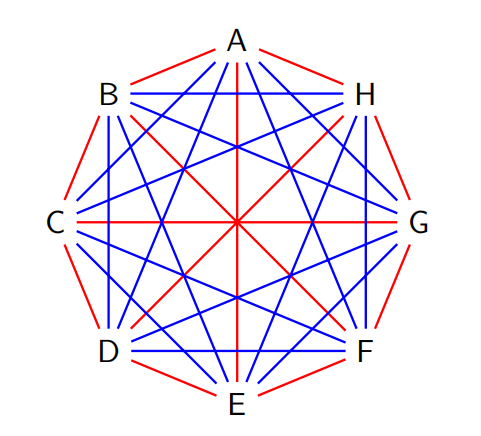

概率方法小记
Ramsey theory
定义$R(s,t)$为最小的正整数$n$，使得对$K_n$的边做任意的红蓝二着色时一定会存在红色的$K_s$或者蓝色的$K_t$。
- $R(2,t)=t$。
- $R(3,3)=6$。（任意六个人一定有三人互相认识或者三人互相不认识）
$R(3,4)=9$。
若在$K_9$中有一个红蓝二着色，不存在$K_3$和$K_4$， 则每个顶点关联于3条红边5条蓝边，红色度数总计$9\times3 = 27$，不可能。
下图为$K_8$上的一个不含$K_3$和$K_4$的边着色的例子。

拉姆塞数和概率方法
Theorem：若参数$n,k$满足$\binom{n}{k}2^{1 - \binom{k}{2}} < 1$，则$R(k,k)>n$，亦即，存在$K_n$的一个边二着色，使得图中没有单色的$K_k$。
证明：随机对每条边着色（每条边独立地以概率1/2染某色），对任意$R\subseteq V$，$|R| = k$，记$A_R$为事件“$R$所诱导的子图为单色”。
$Pr(\text{存在单色}K_k)=Pr\left(\bigcup_{R\in\binom{[n]}{k}}A_R\right)\leq\sum_{R}Pr[A_R]\leq\binom{n}{k}2^{1-\binom{k}{2}}<1$，于是，$Pr(\text{不存在单色}K_k)>0$。
以上式子中$Pr(A_R)=\frac{2}{2^{\binom{k}{2}}}=2^{1-\binom{k}{2}}$。
最简单的概率方法的应用形式如下
-
为证明某种带有性质$P$的组合结构存在，随机构造一个组合结构，证明其有性质$P$的概率严格大于零（如Ramsey的例子）
-
对于一个给定的函数$f$，若能证明$E[f(x)] = a$，则一定存在一个具体的样本$x'$，使得$f(x') \geq a$（同理，$f(x') \leq a$）